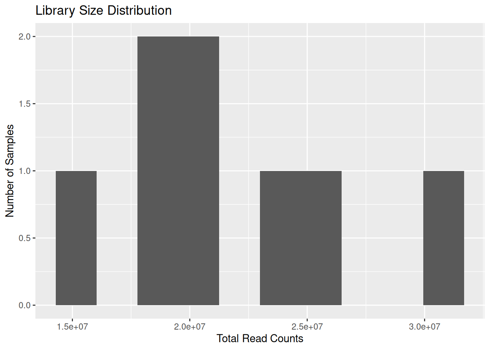

2 Day-2 : Data Manipulation and Visualization in R
2.1 Learning Objectives
By the end of this day, students will be able to:
- Understand tidy data principles
- Use
dplyrfor data manipulation - Create publication-quality plots using
ggplot2 - Work efficiently with real-world datasets
- Perform basic exploratory data analysis (EDA)
2.2 Introduction to the Tidyverse
The tidyverse is a collection of R packages designed for:
- Data manipulation
- Data visualization
- Data analysis workflows
Core tidyverse packages include:
ggplot2– data visualization
dplyr– data manipulation
tidyr– data reshaping
readr– data import
tibble– modern data frames
stringr– string manipulation
forcats– categorical data handling
lubridate- makes it easier to work with dates and timesreadxl- data import *
note: readxl is not loaded automatically with library(tidyverse)
2.3 Installing and Loading Packages
Install packages (only once):
Load packages (before every session):
## ── Attaching core tidyverse packages ────────── tidyverse 2.0.0 ──
## ✔ dplyr 1.1.4 ✔ readr 2.1.6
## ✔ forcats 1.0.1 ✔ stringr 1.6.0
## ✔ ggplot2 4.0.1 ✔ tibble 3.3.1
## ✔ lubridate 1.9.4 ✔ tidyr 1.3.2
## ✔ purrr 1.2.1
## ── Conflicts ──────────────────────────── tidyverse_conflicts() ──
## ✖ dplyr::filter() masks stats::filter()
## ✖ dplyr::lag() masks stats::lag()
## ℹ Use the conflicted package (<http://conflicted.r-lib.org/>) to force all conflicts to become errors2.4 Tidy Data Principles
A dataset is tidy if:
Each variable is a column
Each observation is a row
Each value is a cell
These principles make data easier to manipulate, visualize and analyze.
2.4.1 Working with a Real Dataset
We will use the built-in iris dataset.
## Sepal.Length Sepal.Width Petal.Length Petal.Width Species
## 1 5.1 3.5 1.4 0.2 setosa
## 2 4.9 3.0 1.4 0.2 setosa
## 3 4.7 3.2 1.3 0.2 setosa
## 4 4.6 3.1 1.5 0.2 setosa
## 5 5.0 3.6 1.4 0.2 setosa
## 6 5.4 3.9 1.7 0.4 setosa## 'data.frame': 150 obs. of 5 variables:
## $ Sepal.Length: num 5.1 4.9 4.7 4.6 5 5.4 4.6 5 4.4 4.9 ...
## $ Sepal.Width : num 3.5 3 3.2 3.1 3.6 3.9 3.4 3.4 2.9 3.1 ...
## $ Petal.Length: num 1.4 1.4 1.3 1.5 1.4 1.7 1.4 1.5 1.4 1.5 ...
## $ Petal.Width : num 0.2 0.2 0.2 0.2 0.2 0.4 0.3 0.2 0.2 0.1 ...
## $ Species : Factor w/ 3 levels "setosa","versicolor",..: 1 1 1 1 1 1 1 1 1 1 ...2.5 The Pipe Operator (%>%)
When working with the tidyverse, we often perform multiple operations in sequence.
The pipe operator (%>%) allows us to write these steps in a clear and readable way.
The pipe takes the output of one step and passes it as the input to the next step. You can read %>% as “and then”, which helps in understanding the flow of the code.
Without the pipe
## Sepal.Length Sepal.Width
## 1 5.1 3.5
## 2 4.9 3.0
## 3 4.7 3.2
## 4 4.6 3.1
## 5 5.0 3.6
## 6 5.4 3.9with pipe
## Sepal.Length Sepal.Width
## 1 5.1 3.5
## 2 4.9 3.0
## 3 4.7 3.2
## 4 4.6 3.1
## 5 5.0 3.6
## 6 5.4 3.9The pipe allows code to be read from top to bottom, similar to a workflow.
2.6 Data Manipulation with dplyr
Note: Most tidyverse functions assume that data is already in tidy format.
Selecting Columns
## Sepal.Length Sepal.Width
## 1 5.1 3.5
## 2 4.9 3.0
## 3 4.7 3.2
## 4 4.6 3.1
## 5 5.0 3.6
## 6 5.4 3.9Exclude columns:
## Sepal.Length Sepal.Width Petal.Length Petal.Width
## 1 5.1 3.5 1.4 0.2
## 2 4.9 3.0 1.4 0.2
## 3 4.7 3.2 1.3 0.2
## 4 4.6 3.1 1.5 0.2
## 5 5.0 3.6 1.4 0.2
## 6 5.4 3.9 1.7 0.4Filtering Rows
## Sepal.Length Sepal.Width Petal.Length Petal.Width Species
## 1 5.1 3.5 1.4 0.2 setosa
## 2 4.9 3.0 1.4 0.2 setosa
## 3 4.7 3.2 1.3 0.2 setosa
## 4 4.6 3.1 1.5 0.2 setosa
## 5 5.0 3.6 1.4 0.2 setosa
## 6 5.4 3.9 1.7 0.4 setosaMultiple conditions:
## Sepal.Length Sepal.Width Petal.Length Petal.Width Species
## 1 6.3 3.3 6.0 2.5 virginica
## 2 5.8 2.7 5.1 1.9 virginica
## 3 7.1 3.0 5.9 2.1 virginica
## 4 6.3 2.9 5.6 1.8 virginica
## 5 6.5 3.0 5.8 2.2 virginica
## 6 7.6 3.0 6.6 2.1 virginicaCreating New Variables (mutate)
## Sepal.Length Sepal.Width Petal.Length Petal.Width Species Sepal.Area
## 1 5.1 3.5 1.4 0.2 setosa 17.85
## 2 4.9 3.0 1.4 0.2 setosa 14.70
## 3 4.7 3.2 1.3 0.2 setosa 15.04
## 4 4.6 3.1 1.5 0.2 setosa 14.26
## 5 5.0 3.6 1.4 0.2 setosa 18.00
## 6 5.4 3.9 1.7 0.4 setosa 21.06Sorting Data (arrange)
## Sepal.Length Sepal.Width Petal.Length Petal.Width Species
## 1 4.3 3.0 1.1 0.1 setosa
## 2 4.4 2.9 1.4 0.2 setosa
## 3 4.4 3.0 1.3 0.2 setosa
## 4 4.4 3.2 1.3 0.2 setosa
## 5 4.5 2.3 1.3 0.3 setosa
## 6 4.6 3.1 1.5 0.2 setosa## Sepal.Length Sepal.Width Petal.Length Petal.Width Species
## 1 7.9 3.8 6.4 2.0 virginica
## 2 7.7 3.8 6.7 2.2 virginica
## 3 7.7 2.6 6.9 2.3 virginica
## 4 7.7 2.8 6.7 2.0 virginica
## 5 7.7 3.0 6.1 2.3 virginica
## 6 7.6 3.0 6.6 2.1 virginicaSummarizing Data (summarise)
## mean_sepal_length sd_sepal_length
## 1 5.843333 0.8280661Grouped Operations (group_by)
This allow us to perform summaries separately for each group in the data.
iris %>%
group_by(Species) %>%
summarise(
mean_sepal_length = mean(Sepal.Length),
mean_petal_length = mean(Petal.Length)
)## # A tibble: 3 × 3
## Species mean_sepal_length mean_petal_length
## <fct> <dbl> <dbl>
## 1 setosa 5.01 1.46
## 2 versicolor 5.94 4.26
## 3 virginica 6.59 5.552.7 Introduction to ggplot2
The grammar of graphics:
- Data
- Aesthetics (aes)
- Geometries (geom_*)
In ggplot2, plots are built by combining data, aesthetics, and geometric layers.
2.7.1 Basic Scatter Plot

Adding Color and Labels
ggplot(iris, aes(x = Sepal.Length, y = Sepal.Width, color = Species)) +
geom_point() +
labs(
title = "Sepal Length vs Width",
x = "Sepal Length",
y = "Sepal Width"
)
Boxplots

Histograms

Combining dplyr and ggplot2
iris %>%
filter(Species != "setosa") %>%
ggplot(aes(x = Petal.Length, y = Petal.Width, color = Species)) +
geom_point()
2.8 Exploratory Data Analysis (EDA)
Exploratory Data Analysis (EDA) is the process of examining and summarizing data to understand its main characteristics before applying formal statistical models.
EDA relies heavily on visualization and simple summaries, rather than statistical tests.
Why EDA is important
EDA helps you to:
Understand the structure and shape of the data
Detect outliers and unusual observations
Identify patterns and relationships
Compare groups
Assess data quality
Generate hypotheses for further analysis
2.8.1 Understanding the Structure of the Data
Before any analysis, always inspect the data.
## Sepal.Length Sepal.Width Petal.Length Petal.Width
## Min. :4.300 Min. :2.000 Min. :1.000 Min. :0.100
## 1st Qu.:5.100 1st Qu.:2.800 1st Qu.:1.600 1st Qu.:0.300
## Median :5.800 Median :3.000 Median :4.350 Median :1.300
## Mean :5.843 Mean :3.057 Mean :3.758 Mean :1.199
## 3rd Qu.:6.400 3rd Qu.:3.300 3rd Qu.:5.100 3rd Qu.:1.800
## Max. :7.900 Max. :4.400 Max. :6.900 Max. :2.500
## Species
## setosa :50
## versicolor:50
## virginica :50
##
##
## This helps answer:
What variables are present?
Are they numeric or categorical?
Are ranges reasonable?
2.8.2 Checking for Missing Values
## Sepal.Length Sepal.Width Petal.Length Petal.Width Species
## 0 0 0 0 02.8.3 Understanding Distributions
Histogram (distribution of a numeric variable)
ggplot(iris, aes(x = Sepal.Length)) +
geom_histogram(bins = 30) +
labs(
title = "Distribution of Sepal Length",
x = "Sepal Length",
y = "Count"
)
Questions to ask:
- Is the distribution symmetric or skewed?
- Are there extreme values?
2.8.4 Identifying Outliers
ggplot(iris, aes(y = Sepal.Length)) +
geom_boxplot() +
labs(
title = "Boxplot of Sepal Length",
y = "Sepal Length"
)
Boxplots are useful for spotting:
- Outliers
- Spread of the data
- Median values
2.8.5 Comparing Groups
Boxplot by group
ggplot(iris, aes(x = Species, y = Sepal.Length, fill = Species)) +
geom_boxplot() +
labs(
title = "Sepal Length by Species",
x = "Species",
y = "Sepal Length"
)
This helps answer:
- Do groups differ in central tendency?
- Is variability similar across groups?
2.8.6 Exploring Relationships Between Variables
Scatter plot
ggplot(iris, aes(x = Petal.Length, y = Petal.Width)) +
geom_point() +
labs(
title = "Petal Length vs Petal Width",
x = "Petal Length",
y = "Petal Width"
)
Scatter plot with grouping
ggplot(iris, aes(x = Petal.Length, y = Petal.Width, color = Species)) +
geom_point() +
labs(
title = "Petal Length vs Petal Width by Species"
)
Questions to ask:
- Are variables related?
- Do relationships differ by group?
2.8.7 Simple Group Summaries
iris %>%
group_by(Species) %>%
summarise(
mean_sepal_length = mean(Sepal.Length),
sd_sepal_length = sd(Sepal.Length)
)## # A tibble: 3 × 3
## Species mean_sepal_length sd_sepal_length
## <fct> <dbl> <dbl>
## 1 setosa 5.01 0.352
## 2 versicolor 5.94 0.516
## 3 virginica 6.59 0.636These summaries describe patterns, not statistical significance.
2.8.8 EDA vs Statistical Analysis
EDA answers:
- What does the data look like?
Statistical analysis answers:
Are the observed differences statistically significant?
Formal hypothesis testing will be covered in week-3 in Statistics sessions. Will give introduction in next session from prospect of analysis.
Good EDA helps you:
- Understand your data
- Avoid incorrect assumptions
- Ask better scientific questions